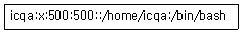
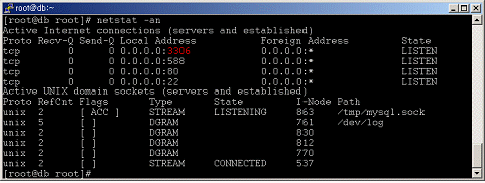
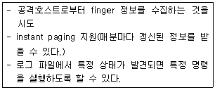

1과목: 정보보호개론
1. 비대칭형 암호화 방식은?
2. 공개키 암호 알고리즘에 관한 설명 중 옳지 않은 것은?
3. 암호 프로토콜 서비스에 대한 설명 중 옳지 않은 것은?
4. WWW에서의 보안 프로토콜로 옳지 않은 것은?
5. 홍길동이라는 사람이 한국정보통신자격협회의 서버 컴퓨터에 대한 컴퓨터 네트워크 주소 정보를 해킹 툴을 이용하여 스캔하였다. 이에 대한 법적제제는 다음 중 어디에 속하는가?
6. 해킹 방법들에 대한 설명 중 옳지 않은 것은?
7. 네트워크 보안을 규정하고 있는 국제 위원회는?
8. S-HTTP(Secure Hypertext Transfer Protocol)에 관한 설명 중 옳지 않은 것은?
9. 안전한 전자지불을 위하여 수립된 보안 대책과 사용 용도에 대한 연결이 옳지 않은 것은?
10. 인증 서비스를 제공하기 위한 공개키 인증서(Public-key Certificate)에 포함되어 있지 않은 내용은?
2과목: 운영체제
11. Windows 2000 Server의 File 시스템에서 FAT와 NTFS에 대한 설명으로 옳지 않은 것은?
12. Windows 2000 Server의 “Imhosts” 파일에 관한 설명 중 올바른 것은?
13. FTP 서비스에 대한 설명 중에서 옳지 않은 것은?
14. Windows 2000 Server에서 계정관리에 대한 설명으로 옳지 않은 것은?
15. Windows 2000 Server에서 자동으로 호스트의 네트워크 환경을 설정할 수 있는 서비스는?
16. Windows 2000 Server의 DNS 서비스 설정에 관한 설명으로 옳지 않은 것은?
17. Windows 2000 Server에서 제공하고 있는 VPN 프로토콜인 L2TP(Layer Two Tunneling Protocol)에 대한 설명 중 옳지 않은 것은?
18. Windows 2000 Server에서 사용자 계정의 옵션으로 설정할 수 있는 항목으로 옳지 않은 것은?
19. Windows 2000 Server의 “Server Operators” 그룹에 속한 사용자가 수행할 수 없는 권한은?
20. Linux 콘솔 상에서 네트워크 어댑터 "eth0"을 "192.168.1.1" 이라는 주소로 사용하고 싶을 때 올바른 명령은?
21. RedHat 계열의 Linux 시스템에서 처음 부팅 시 사용자가 정의해 실행할 명령을 넣는 스크립트 파일의 이름은?
22. Linux 서버 내에 로그인 해 있는 사람들과 실시간 채팅을 할 수 있는 Perl 스크립트를 만들어 “chat.pl” 이라는 파일로 저장하였다. 하지만 저작권 문제 때문에 소스를 보이지 않고 사람들이 오직 이 스크립트 파일을 실행만 하게하고 싶다. 이때 올바른 파일 퍼미션은?
23. 현재 Linux 서버는 Shadow Password System을 사용하고 있고, “/etc/passwd”에서 “icqa”의 부분은 아래와 같다. “icqa" 계정을 비밀번호 없이 로그인 되도록 하려할 때, 올바른 방법은?

24. Linux의 VI 편집기에서 수정하던 파일을 저장하지 않고 종료 시키는 명령은?
25. Linux 압축 포맷 중 확장자가 “tgz”인 File을 압축 해제하는 명령어는?
26. Linux에서 서비스 데몬들의 설정파일을 가지고 있는 디렉터리는?
27. Linux의 RPM(Redhat Package Management)으로 설치된 모든 패키지를 출력하는 명령어는?
28. Linux의 ipchains 프로그램을 이용해서 192.168.1.1의 80번 포트로 향하는 패킷이 아닌 것을 모두 거부하고 싶을 때, 올바른 명령 형식은?
29. Linux 시스템이 부팅될 때 나오는 메시지가 저장된 로그 파일의 경로와 명칭으로 올바른 것은?
30. linux에서 “netstat -an” 명령으로 어떤 시스템을 확인한 결과 다음과 같은 결과가 나왔다. 아래 "3306"번 포트는 어떤 데몬이 가동될 때 열리는 포트인가? (단, 시스템에서는 Well-Known 포트를 기본 포트로 사용한다.)

3과목: 네트워크
31. 근거리 통신망 이더넷 표준에서 이용하는 매체 액세스 제어 방법은?
32. 논리 “1”을 음대양 전이(Low-to-High Transition)로, 논리 “0”을 양대음 전이(High-to-Low Transition)로 표현하는 부호화 방법은?
33. X.25 프로토콜에서 회선 설정, 데이터 교환, 회선 종단 단계를 가지며, 패킷의 종단 간(End-to-End) 패킷 전송을 위해 사용되는 방식은?
34. 컴퓨터 자료 단위에 대한 설명으로 옳지 않은 것은?
35. 라우팅 되지 않는 프로토콜(Non-Routable Protocol)은?
36. OSI 7 Layer에서 암호/복호, 인증, 압축 등의 기능이 수행되는 계층은?
37. IPv4 Address에 관한 설명 중 옳지 않은 것은?
38. 네트워크를 관리 모니터링 하는데 사용되는 프로토콜로, “get”, “get-next”, “set”, “trap” 과 같은 메시지를 사용하여 작업을 수행하는 것은?
39. 인터넷 IPv4 주소는 Class, NetworkID, HostID 부분으로 구성되어 있다. “203.249.114.2”가 속한 Class는?
40. IPv4 인터넷 헤더 길이(IHL: Internet Header Length) 필드 값이 5 값을 가질 경우, 헤더부의 바이트 수는?
41. 자신의 물리 주소(MAC Address)를 알고 있으나 IP Address를 모르는 디스크 없는 호스트를 위한 프로토콜로서, 자신의 IP Address를 모르는 호스트가 요청 메시지를 브로드 캐스팅하고, 이의 관계를 알고 있는 서버가 응답 메시지에 IP 주소를 되돌려 주는 프로토콜은?
42. IGRP(Interior Gateway Routing Protocol)의 특징으로 옳지 않은 것은?
43. TCP 포트 중 25번 포트가 하는 일반적인 역할은?
44. TCP는 연결 설정과정에서 3-way handshaking 기법을 이용하여 호스트 대 호스트의 연결을 초기화 한다. 다음 중 호스트 대 호스트 연결을 초기화할 때 사용되는 패킷은?
45. TCP 헤더 필드의 내용으로 옳지 않은 것은?
4과목: 보안
46. Windows 2000 Server의 각종 보안 관리에 관한 설명이다. 그룹정책의 보안 설정 중 옳지 않은 것은?
47. SSH(Secure Shell)에 대한 설명으로 옳지 않은 것은?
48. 통신을 암호화하여 중간에서 스니핑과 같은 도청을 하더라도 해석을 할 수 없도록 해 주는 프로그램으로 옳지 않은 것은?
49. PGP(Pretty Good Privacy)에서 사용되는 알고리즘으로 옳지 않은 것은?
50. 다음과 같은 특징이 있는 보안 툴은?

51. 현재 Linux 시스템 상에서 침입자의 침입여부나 사용자의 사용여부를 확인하고자 한다. 적합한 명령어로 옳지 않은 것은?
52. 스머프 공격(Smurf Attack)에 설명으로 올바른 것은?
53. 근거리통신망에서 NIC(Network Interface Card) 카드를 Promiscuous 모드로 설정하여 지나가는 프레임을 모두 읽음으로써 다른 사람의 정보를 가로채기 위한 공격 방법은?
54. IP 스푸핑 공격에 대한 설명으로 옳지 않은 것은?
55. 서비스 거부 공격(DoS)의 특징으로 옳지 않은 것은?
56. “tcpdump” 라는 프로그램을 이용해서 “192.168.1.1” 호스트로부터 “192.168.1.10” 이라는 호스트로 가는 패킷을 보고자 한다. 올바른 명령은?
57. 방화벽 환경설정 과정에 대한 설명 중 옳지 않은 것은?
58. SYN 플러딩 공격에 대한 설명으로 올바른 것은?
59. SSL(Secure Socket Layer)에 대한 설명으로 옳지 않은 것은?
60. 대형 응용 프로그램을 개발하면서, 전체 시험실행을 할 때 발견되는 오류를 쉽게 해결하거나 처음부터 중간에 내용을 볼 수 있는 부정루틴을 삽입해, 컴퓨터의 정비나 유지 보수를 핑계 삼아 컴퓨터 내부의 자료를 뽑아가는 해킹 행위는?